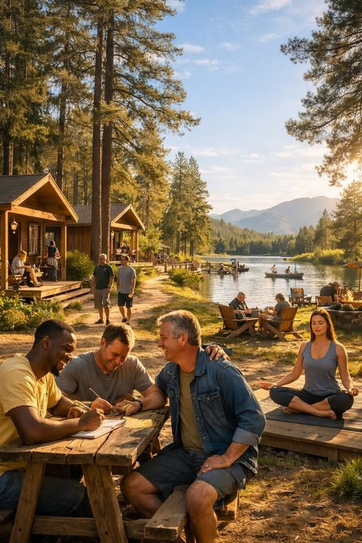

Terra Nova: The Summer-Camp Model of Justice

Download Article #149 as a Word document
TERRA NOVA: THE SUMMER-CAMP MODEL OF JUSTICE
Terra Nova Development | Article #149
“Punishment doesn’t make people better. Environments do.”
Terra Nova flips the entire concept of incarceration upside down.
Instead of cages, guards, and punishment, we create retreat centers — places designed to heal, teach, and restore. These are not prisons. They are summer camps for the human spirit, built on the belief that people grow when they are treated with dignity, not hostility.
And yes — it is dramatically cheaper than the current system.
1. No Punishment — Only Restoration
In Terra Nova, the “punishment” is the opportunity.
People arrive at a place where:
• They are treated as guests, not inmates
• They are fed good food
• They sleep in clean, comfortable cabins
• They have structured days full of learning, exercise, and community
• They receive therapy, coaching, and life skills
• They are surrounded by positive role models, not hardened criminals
The goal is simple: You leave better than you arrived.
Not broken. Not traumatized. Not angry. Not institutionalized. Better.
2. Why People Don’t Run Away
Because there’s nothing to run from.
This isn’t a cage — it’s a retreat.
If you “escape,” you’re not escaping punishment… You’re escaping three hot meals, a warm bed, and a supportive environment.
Nobody wants to miss supper. Nobody wants to miss movie night. Nobody wants to miss the woodworking class or the morning hike.
The incentive structure is flipped:
• You stay because it’s good for you
• You stay because you’re respected
• You stay because you’re growing
Not because you’re forced.
3. The Economics: Cheaper by a Mile
Traditional prisons are insanely expensive because they require:
• High security
• Surveillance systems
• Armed staff
• Isolation units
• Medical wings
• Legal bureaucracy
• Massive infrastructure
A Terra Nova retreat center requires:
Cabins, counselors, teachers, cooks, recreation areas, and basic medical staff.
That’s it. It’s summer-camp logistics, not maximum-security logistics.
The cost difference is staggering:
A U.S. prison bed costs $40,000–$80,000 per year. A summer-camp style retreat costs $8,000–$15,000 per year.
Terra Nova saves money while producing better humans.
4. The Psychological Flip
When people are punished, they harden. When people are nurtured, they soften.
Terra Nova’s model creates:
• Gratitude
• Self-worth
• Skills
• Emotional regulation
• Community bonds
• A sense of purpose
People leave saying: “I’m almost glad I made that mistake… because I came out a better person than I’ve ever been.”
That’s not fantasy. That’s what happens when you treat people like humans instead of problems.
5. Crime Drops Because People Rise
When people leave with:
• A trade
• A support network
• A healed mind
• A sense of belonging
• A plan
• A purpose
They don’t reoffend. Recidivism collapses. Crime drops. Communities stabilize.
This is not “soft on crime.” This is smart on humanity.
6. Terra Nova’s Justice Philosophy
We don’t ask:
“How do we punish you?”
We ask:
“What happened to you?”
“What do you need?”
“How do we help you become the best version of yourself?”
Justice becomes:
• A service
• A support system
• A path to growth
Not a hammer.
7. The Result
A society where:
• Crime is rare
• People are whole
• Mistakes become turning points
• The justice system is a friend, not a threat
• The state invests in people, not cages
This is Terra Nova’s promise:
We don’t throw people away. We bring them back.
Editorial note: This article presents a proposed justice model. Cost and recidivism figures are illustrative claims from the proposal, not independently verified estimates; implementation would require legal, safety, and evaluation safeguards.